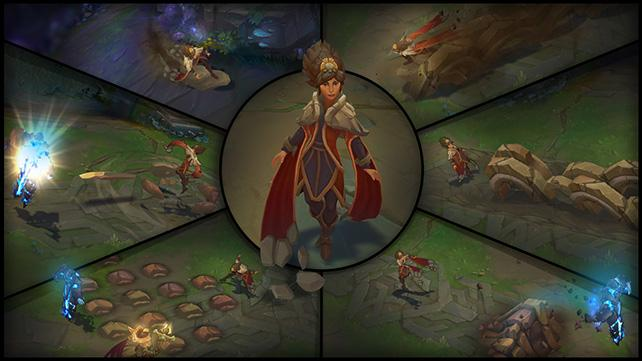
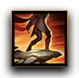
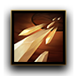
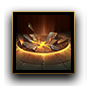
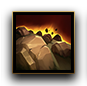
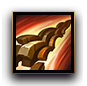

¿Cuándo fue la última vez que lanzamos un mago
tradicional?
Si le preguntamos a Daniel "ZenonTheStoic" Klein, del equipo de diseño
de campeones, nos asegurará que los últimos campeones con poder de
habilidad tienen algún giro que difiere de los magos: las estrellas de
Aurelion Sol lo convierten en un mago poco convencional, Ekko es más
bien un escaramuzador o embestidor, y Azir tiene cualidades que lo
asemejan con un tirador. Vel'Koz es un clásico mago de artillería,
pero últimamente los jugadores lo utilizan como soporte en el carril
inferior.
Para encontrar un mago que encaje con nuestra idea de "mago
tradicional" tenemos que remontarnos hasta abril de 2013, momento en
que Lissandra se estrenó en la Grieta.
Queríamos diseñar un campeón en la línea de los magos de League of
Legends de la vieja escuela. "Entonces se nos ocurrió", comenta
ZenonTheStoic. "¿qué tal una maga de tierra de Shurima ? Comenzamos a
tejer nuestra idea a partir de ahí".

Habilidades:

Pasiva: Surfista de Rocas
Cuando no se encuentra en combate, Taliyah obtiene velocidad de
movimiento si se mueve cerca de las paredes.

Q: Descarga Pétrea
Pasiva: Taliyah obtiene
velocidad de movimiento cuando se desplaza por tierra erosionada. Activa: Taliyah
desgarra el suelo a su alrededor y lanza una descarga de 5
fragmentos de roca en la dirección objetivo.
Mientras lo hace, se puede mover con libertad. Al utilizar
Descarga Pétrea, el área se convierte en tierra erosionada durante
unos minutos.
Al usar nuevamente Descarga Pétrea sobre tierra erosionada solo se
lanzará un proyectil.

W: Empujón Sísmico
Taliyah marca un lugar objetivo.
Tras un breve lapso de tiempo el suelo hace erupción,
dañando y lanzando por los aires a los enemigos atrapados en la
zona.
Taliyah puede volver a activar Empujón Sísmico antes de la
erupción para lanzar a los enemigos en la dirección deseada,
incluso a través de paredes.

E: Tierra Desatada
Taliyah esparce rocas en el suelo frente a ella.
Los oponentes que usen habilidades de deslice a través del suelo
fracturado recibirán daño explosivo.
Tras unos segundos, las rocas restantes harán erupción e
infligirán una segunda oleada de daño.

R: Muro de la Tejedora
Tras un breve lapso de canalización, Taliyah invoca una enorme
pared de rocas que se abre camino por la Grieta en la dirección
objetivo.
Taliyah puede reactivar Muro de la Tejedora durante la
canalización para subirse al muro mientras emerge.
Recibir daño o moverse en cualquier dirección interrumpirá su
trayecto sobre el muro.